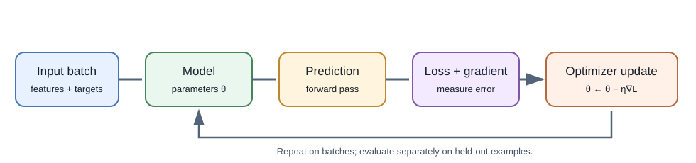
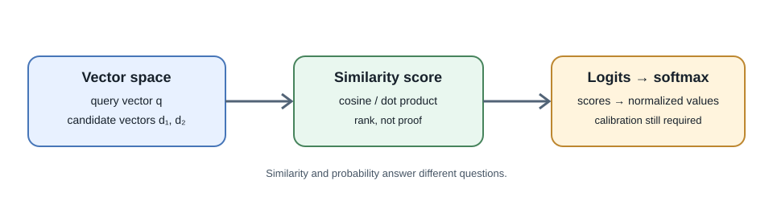

Mathematics for Machine Learning¶
Introduction¶
You do not need advanced mathematics to call a model API. A practical understanding of vectors, probability, loss, and gradients helps explain what models learn, how embeddings are compared, and why training changes parameters.


Scalars, vectors, and matrices¶
- A scalar is one value, such as a learning rate.
- A vector is an ordered list of values, such as an embedding or a row of numeric features.
- A matrix is a grid of values. A dataset with rows for examples and columns for features can be represented as a matrix.
- A tensor generalizes arrays to more dimensions, such as a batch of images with height, width, and color channels.
Dimensions are part of the meaning. If a batch has 32 examples and each has
10 features, its shape is commonly written (32, 10). Matrix operations
require compatible dimensions; shape errors often reveal a mistaken
assumption about the data.
Dot product and cosine similarity¶
For vectors (a) and (b), the dot product multiplies corresponding entries and sums the results:
[ a \cdot b = \sum_i a_i b_i ]
Cosine similarity divides the dot product by the vector lengths:
[ \operatorname{cosine}(a,b) = \frac{a \cdot b}{|a||b|} ]
It emphasizes direction rather than raw magnitude. Embedding models and indexes may use cosine similarity, dot product, or another distance; use the metric expected by the specific embedding and index.
from math import sqrt
def cosine(a, b):
dot = sum(x * y for x, y in zip(a, b))
norm_a = sqrt(sum(x * x for x in a))
norm_b = sqrt(sum(y * y for y in b))
if norm_a == 0 or norm_b == 0:
raise ValueError("cosine similarity is undefined for a zero vector")
return dot / (norm_a * norm_b)
print(round(cosine([1, 0], [0.8, 0.2]), 3)) # 0.970
High similarity means the representation is close under the chosen metric. It does not mean that a passage is correct, authorized, or actually answers a question.
Probability, logits, and softmax¶
A model classifier may return logits, real-valued scores that are not probabilities. The softmax function converts a vector of logits into positive values that sum to one:
[ \operatorname{softmax}(z_i) = \frac{e^{z_i}}{\sum_j e^{z_j}} ]
In practice, subtract the largest logit before exponentiation to reduce overflow:
from math import exp
def softmax(logits):
peak = max(logits)
values = [exp(value - peak) for value in logits]
total = sum(values)
return [value / total for value in values]
print([round(p, 3) for p in softmax([2.0, 1.0, 0.1])])
# [0.659, 0.242, 0.099]
The resulting values sum to one for this candidate set, but a value such
as 0.659 is not automatically a calibrated 65.9% chance of correctness.
Calibration must be measured against outcomes.
Loss and cross-entropy¶
A loss function assigns a numeric penalty to model predictions during training. For a classification task with a correct class (y) and predicted probabilities (p), cross-entropy loss is:
[ L = -\log(p_y) ]
Assigning higher probability to the correct class reduces this loss. Training usually averages or otherwise aggregates losses across examples. The training objective is a useful signal, not a complete measure of product quality, truthfulness, or safety.
Gradients and gradient descent¶
A gradient describes how a small change in parameters would change a loss. Gradient descent updates parameters in the direction that reduces loss:
[ \theta_{\text{new}} = \theta_{\text{old}} - \eta \nabla_\theta L ]
Here, (\theta) represents model parameters and (\eta) is the learning rate. If the learning rate is too large, optimization can overshoot; if too small, learning can be slow. Backpropagation applies the chain rule to calculate gradients through a neural network.
For a tiny linear regression example, use the model (y = wx + b). The following pseudocode-like Python sketch shows the repeated update:
for x, target in examples:
prediction = weight * x + bias
error = prediction - target
weight_gradient += 2 * error * x / len(examples)
bias_gradient += 2 * error / len(examples)
weight -= learning_rate * weight_gradient
bias -= learning_rate * bias_gradient
This sketch omits initialization and the outer training loop; it illustrates the update only. In deep networks, automatic differentiation libraries calculate these gradients over many tensor operations.
Batches, epochs, and generalization¶
- A batch is a subset of training examples used for one parameter update.
- An epoch is one pass through a training dataset.
- A learning rate schedule changes the update size during training.
- Regularization discourages some forms of overly complex fitting.
- A validation set helps compare choices; a test set should remain held out for a final estimate.
Training well on examples is not enough. A model must generalize to cases that represent its actual use. See Machine Learning and Deep Learning for data splits, metrics, and leakage.
Full-stack developer perspective¶
For application work, these ideas explain why embeddings have dimensions, why similarity is only a ranking signal, why classifiers need thresholds, and why training loss is not a user-facing success metric. You usually use a library or API for the calculations, but you should still understand what its scores and metrics do—and do not—mean.